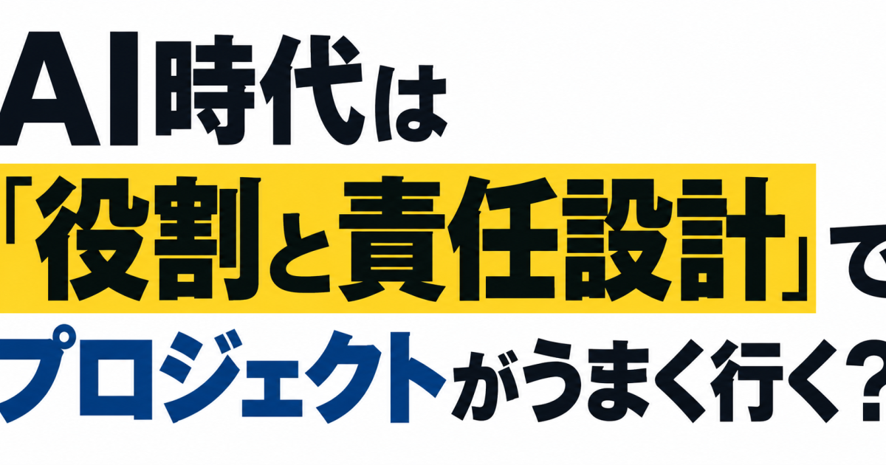

01【大公開】マンション価格「大幅変動」エリアが拡大している
発行日時：2026年9月28日 05:30 JST
あなたに関係ありそうな理由
不動産の価格査定や購入判断で、都心の値下がりと実需エリアの上昇を混同しないための材料になります。
概要
東京のマンション価格は、単に上昇か下落かでは捉えにくくなっている。NewsPicksはマンションAI査定サービス「CAPS」の協力を得て、東京23区の約4000棟を調べ、売り出し価格の変化幅を基に値動きの大きい棟を分析した。5年前の2021年8月を起点にすると、上位100棟のうち港区が57棟、中央区が29棟。都心の高額物件では大幅上昇のあと下落に転じ、億単位の値下げも珍しくないという。港区のウェリスタワー愛宕虎ノ門は、記事中の推定価格で2021年の約1億8200万円から2025年に約4億9700万円へ上がり、直近1年で約4億5500万円へ下がった。
ところが、集計期間を直近1年にすると景色は変わる。門前仲町、森下、錦糸町など城東エリアの築20年前後のマンションが上位に並び、上位100棟の価格中央値は約8500万円。こちらは主に上昇方向の変動で、住むために買う人が検討する物件にも波が及んでいる。記事は背景に短期転売を挙げる。コロナ禍の在庫不足をきっかけに価格が上がり、買取再販業者や資産管理法人などが参入。値上がりを見込む買いがさらに価格を押し上げた。金利上昇で実需層が都心の高値についていきにくくなっても、円安下の海外資金が上昇を支えたという見立てだ。ただし、外国人だけが原因という単純化はできない。
記事によれば2025年秋以降、都心の高額物件では買い手の動きが鈍り、在庫を抱えた転売業者が返済期限を意識して値下げしている。他方、実需層と転売業者は周辺エリアへ移り、江東区や墨田区などでは価格が上がる。つまり同じ東京でも、価格が下がる棟と上がる棟が同時にある。表示コメントには、短期転売だけでなく建築費の高止まりが新築価格の下限をつくるとの指摘や、築古物件では修繕積立金と長期修繕計画を確認すべきだという実務的な論点があった。ランキングは売り出し価格に基づく推定値で、成約価格そのものではない。買う側は、広域の相場観だけでなく、当該棟の在庫、価格改定の履歴、修繕費、保有期間を分けて見る必要がある。売る側も、一件の強気な売り出しを市場全体の実勢と見なさないことが大切だ。東京以外の市場へも、この結果をそのまま当てはめることはできない。
仕事や会話で使える一言
「都心の値下がりと城東の実需物件の上昇は同時に起きています。棟ごとの在庫と修繕計画まで見たいですね。」
NewsPicks原文を読む
02【サントリー】「NOPE」ヒットは綿密な下準備の賜物だった
発行日時：2026年9月28日 05:30 JST
あなたに関係ありそうな理由
新商品やサービスを広める際、広告だけでなく営業と取引先の準備がどれほど重要かを示す事例です。
概要
サントリーの炭酸飲料「ギルティ炭酸 NOPE」が、発売150日で出荷1億本を突破した。記事によると、令和以降に発売した同社の飲料では最速の到達で、2026年3〜7月の炭酸飲料市場における構成比は6.8％。コカ・コーラや三ツ矢サイダーのような長年親しまれてきた商品が強い成熟市場で、新顔が7％弱の存在感を得たことになる。NewsPicksはブランドマネージャーの大槻拓海氏に、商品が生まれ、売り場を確保するまでを聞いた。出発点は、ストレス解消の形が変わったのではないかという社内の会話だった。若手社員が休日に暗い部屋でだらだら過ごすのが好きだと話したことから、外で騒ぐのではなく自分の欲求を肯定する時間に着目した。
健康志向とは逆を向く「ギルティ」のコンセプトには、社内で反発もあった。単に高カロリーを勧める商品と受け取られないよう、担当者は「こうあるべき」という窮屈さから少し離れる心の健康という考えを説明して回った。想定した主な顧客は10〜30代の男性だったが、発売後は40〜60代の男性にも同程度の購買が広がり、40代以上のリピート率が高かったという。若年層の話題化が上の世代の試し買いにつながったとの分析だ。ただ、初速の大きさだけで定番化が証明されたわけではない。味への好みや再購入が続くかは、これからの勝負になる。
大きな売り場は広告費だけで買ったわけではない、と大槻氏は説明する。発売前の前年9月末、全国から若手を含む約40人の営業担当者を集め、コンセプトと伝え方を共有した。11月から発売直前の2月まで取引先との商談を重ね、「一緒に売る」提案をしたという。小売側が売れそうだと判断しなければ、棚は広がらない。減速を指摘する報道に対しては、600ミリリットルのペットボトルと自販機向け340ミリリットル缶しかない商品を、大小すべての容器を含む順位で比べるのは適切でないと反論する。同社が重視する500〜700ミリリットルの区分では今も上位だが、認知率62％は課題として残る。表示コメントでも、発売時の話題性と、2年目以降に棚に残れる継続性は別だという論点が目立った。商品の思想、営業現場の準備、再購入を同じ線上で見ることが、このヒットを学ぶ要点だ。
仕事や会話で使える一言
「NOPEは広告だけの成功ではなく、発売前に営業と小売が売る理由を共有した点が大きいですね。」
NewsPicks原文を読む
03NOT A HOTELの次は、アフォーダブル住宅？ スター建築家たちの新天地
発行日時：2026年9月28日 06:01 JST
あなたに関係ありそうな理由
家業の不動産や住宅供給を、家賃だけでなく光熱費、地域との関係、設計と施工の一体性から考えられます。
概要
著名建築家が富裕層向けの別荘や商業施設だけでなく、低中所得者が暮らせる「アフォーダブル住宅」を手掛けている。記事は、住居の価格だけでなく、地域への開放や光熱費も含めて住宅を設計する例を紹介する。米サンフランシスコの「730 Stanyan」は、レム・コールハース氏率いるOMAにとって初のアフォーダブル住宅で、全160戸。ホームレス経験のある世帯向けの恒久的支援住宅や、家賃補助の利用者向け住戸を含む。1階に幼児教育施設と一般に開かれた広場を設け、建物中央のくぼみが周辺住民を呼び込む。外壁の波型パネルには窓と換気ルーバーを一体化し、意匠と施工の効率を両立させたという。
ニューヨークで計画されるヘルツォーク＆ド・ムーロン設計の「Hudson Mosaic」は、低層階にプール、体育施設、メディアラボなどの公共施設を備える構想だ。オール電化、太陽光、屋上緑化も取り入れ、住み続ける費用を抑える視点がある。ダニエル・リベスキンド氏の「Atrium at Sumner」は、高齢の低所得者向けの190戸で、うち57戸をホームレス経験者に割り当てる。共有空間やアトリウムを通じて、孤立しない暮らしを意識した。これらは単に「有名建築家が安い建物をデザインした」話ではなく、行政との共同事業、入居条件、地域の公共空間を組み合わせた住宅政策の事例である。
記事は、民間開発で一定割合を低所得者向けにする制度にも触れ、家賃高騰で元から住む人が追い出される問題への対応を考える。日本への応用は制度や採算の検討が必要だが、所得層を分断せずに住める街をつくる視点は有益だ。表示コメントでは「安いのは家賃であり建設費とは限らない」との指摘があった。太陽光や緑化は初期投資を増やす場合もあるが、入居者が毎月払う家賃と光熱費の合計を下げ得る。設計、積算、施工、運営を別々に最適化すると、総額での効果を取り逃すという実務家の意見も示された。別のコメントは、建物だけでなく街路や地域の計画、行政の優遇策まで考える必要を挙げる。住宅の豊かさを外観や家賃の一点で測らず、入居者の長期負担と地域の使いやすさまで見通したい。誰が費用を負担し、誰が便益を得るかも問われる。
仕事や会話で使える一言
「手頃な住宅は建設費だけを削る話ではなく、家賃と光熱費を含む暮らしの総額を設計する話ですね。」
NewsPicks原文を読む
04AIに聞ける時代に、なぜ人は「仲間」に聞きに行くのか？
発行日時：2026年9月28日 10:36 JST
あなたに関係ありそうな理由
AIで調べ物を効率化しつつ、家業やNPOの現場で人に相談する価値を整理できます。
概要
生成AIに質問すれば、手順や一般的な答えがすぐ返る。それでも人は勉強会や同業者の集まりに行くのはなぜか。記事は、プログラマー向けQ&Aサイト「Stack Overflow」の質問数が大幅に減ったという報道を入口に、人と人が学び合う価値を考える。手掛かりは「コミュニティ・オブ・プラクティス」、日本語では実践共同体という組織学習の概念だ。職種やテーマへの関心、互いに助け合う関係、共有された事例や道具の三つが重なる場で、新人は周辺的な仕事から参加し、先輩とのやり取りを通じて一人前になっていく。教室で説明を受けるだけでは習得しにくい知識が、現場の対話に宿るという見方である。
具体例はゼロックスのコピー機修理技術者たちだ。難しい故障の対処法はマニュアルより、休憩中に交わす体験談から伝わっていた。後に技術者が現場で見つけた解決策を共有する仕組みがつくられ、投稿者名と仲間による検証が信頼を支えた。社外の専門家コミュニティでも、見返りを期待するだけでなく、自分の経験が役立ち専門家として認められることが知識共有の動機になるという研究が紹介される。AIは既知の情報を整理するのに役立つ一方、失敗時に何を迷い、なぜ例外的に判断したかという当事者の経緯は、本人との対話で初めて聞けることがある。
さらに記事は、複数の組織を行き来して知識を運ぶ人を「境界を越える人」として捉える。社外の勉強会で聞いたやり方を職場に持ち帰って試し、その結果をまた別の場に戻す。この往復は、閉じた組織の常識を問い直すきっかけになる。表示コメントでも、正しい答えだけでなく、一緒に考えてほしい、失敗の手触りを聞きたいという声があった。ただし、人に聞けば必ず正しいわけでも、AIの一般的な回答が無価値なわけでもない。事実や手順をAIで下調べし、事情が複雑な判断や経験の共有は相手に尋ねるという使い分けが現実的だ。家業や地域活動なら、単発の会議だけでなく、困りごとと試行錯誤を持ち寄れる関係を育てることが学習の資産になる。情報を保存する仕組みと、安心して失敗を話せる場の双方が必要だ。参加者が互いの仕事の背景を知るほど、一般論をそのまま移さずに済む。
仕事や会話で使える一言
「手順はAIに聞けても、実際に失敗した人がどう立て直したかは本人に聞きたいですね。」
NewsPicks原文を読む
05AI時代は「役割と責任設計」でプロジェクトがうまく行く
発行日時：2026年9月28日 05:30 JST

あなたに関係ありそうな理由
複数の仕事をAIと進める際、作業が速くなっても判断者と確認者が曖昧なままになる問題を防ぐヒントになります。
概要
AIで一人ができる仕事は増えた。しかし、それだけでチームの仕事が速くなるわけではない。記事は、企画担当がコードを書き、開発担当が事業要件まで検討するような職能の越境が増える一方、従来の役割分担が据え置かれると摩擦が生じると指摘する。具体的には、二人が同じ作業を進める重複着手、互いに相手が見ていると思って重要な確認が抜ける担当者不在、そして前後の工程へのいら立ちだ。筆者自身も、AIを使って一人で先へ進むことを優先し、目標、日程、決定者を決めずに手戻りを招いた経験を記す。速くなったのは個人の作業で、仕事の受け渡しや意思決定は自動的に速くならない。
背景には三つの変化がある。AIによって次の定例会議までに成果物や前提が大きく変わること、人に残る仕事が作業から「何をやるか」「どの案を採るか」という判断へ移ること、そして課題が職能をまたぐほど抽象的になることだ。手順のある作業は担当の重複が見えやすいが、判断は誰でも下せるため、重なったり宙に浮いたりする。記事は、着手前に目標、役割、進め方、関係性をそろえる「GRPI」という枠組みを提案する。目標には完了状態だけでなく「やらないこと」を含め、役割では実行者、決定者、確認者を分けて論点ごとに最終責任者を一人置く。
進め方では最新情報の置き場所や相談条件、担当が重なったときの解消方法を決める。関係性では、意見の相違や境界の重なりを早く共有できるようにする。記事が強調するのは、重なりをゼロにすることではない。AIで守備範囲が広がる以上、重なりは生じる。だからこそ、誰が最後に決め、こぼれた論点を誰が拾うかを明確にする。表示コメントでも、筆者は自らの失敗が役割設計の省略にあったと補足していた。記事は調査の回答者がAI活用に関心を持つ層に偏る点にも注意を添えるため、割合だけを全企業へ一般化すべきではない。仕事で応用するなら、AIの出力を誰が検証して止めるか、更新された成果物の正本はどこか、変更を誰へ知らせるかを案件開始時に確認したい。AIツールを増やす前に、人間の責任と受け渡しを設計し直すことが出発点になる。判断の期限も合意しておけば、手戻りを減らせる。
仕事や会話で使える一言
「AIで作業が速くなったほど、誰が決め、誰が確認するかを先に置きたいですね。」
NewsPicks原文を読む